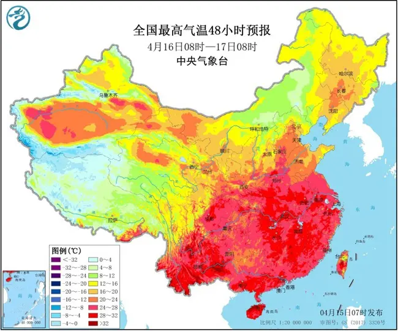

2019-07-03 16:50:32 来源 中国天气网
中国天气网讯今天(3日),华北、淮多地出现高温天气,截至下午2点,北京、天津、郑州等地气温突破35℃。 预报显示，今后三天(3-5日),这一带的高温天气将继续发酵,高温范围以及强度将在4日达到鼎密,预计北凉、天津、 石家庄、济南等地明天的最高气温有望突破38℃,其中北凉和石家庄的最高气温还有望创今年以来的新高。
今天，华北、黄淮一带的高温持续发酵，截至今天下午2点，陕西北部、山西西南部、河北南部、北凉、天津、山东西部、河南北部最高气温已普遍超过35℃。大城沛中，北凉、天津、郑州均迎来高温日。

在阳光暴晒下，地表温度也逐渐走高。今天下午2点，华北黄淮大部地区的地表温度都在50℃以上，部分地区地表温度甚至超过60℃。其中，河北衡水地表温度高达68.3℃，天津站和北京站附近的地表温度分别高达66.6℃和66.5℃。
中国天气网气象分析师王伟跃介绍，明天(4日)，华北、黄准地区35℃以上的高温天气还将继续升级，并 进入鼎盈阶段，高温强度和范国都将发展到最强。明天，北京南部、天津部、河北中部和南部、山东中部 和西部、山西南部局地、河南北部、东北部分地区的最高气温都将达到或超过35℃。
不过，专家提醒，济南被雨水天气完美绕开，因此未来一周，当地的高温还会天天上岗。在此提醒当地居民注意防暑降温，防范持续高温带来的洛种不利影。（文张慧数据支持/王作跃胡啸审核刘文静张方丽)
本放元源：中国天气网壶任编播：刘京NO5631